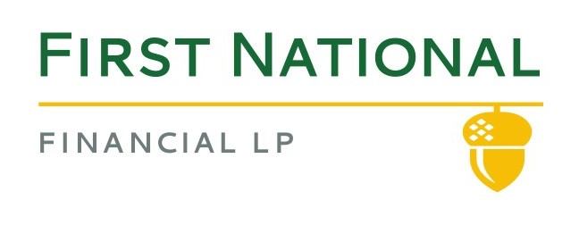
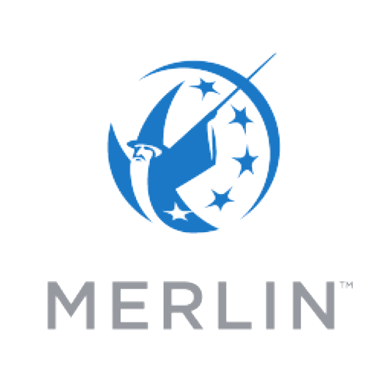

I am a third year software engineering student at the University of Guelph. This page will be used to showcase a summary of my co-op experience at First National along with a description of the employer and job, and a review of how I progressed my goals set at the start of my work term. I am so thankful to everyone at First National for giving me this opportunity to learn and grow. I learned so much these past 8 months, and have been able to achieve what I set out for in my personal learning goals!
 
First National is Canada's largest non-bank mortgage lender. Since 1988 First National has been servicing commercial and residential mortgages across Canada, with offices in: Toronto, Vancouver, Calgary, Montreal, and Halifax. Over the past year First National has seen tremendous growth with more than 200 new hires, now totalling over 1000 employees. I worked on testing First National's in house residential mortgage approval software "Merlin". Underwriters, brokers, solicitors and others use Merlin to review mortgage applications, generate legal documents, and communicate with other financial instituions. First National also leases Merlin to TD and Manulife for them to use it for their own underwriting. This means that I worked on 3 slightly different versions of Merlin, since each line of business over the years has requested different changes, the different versions have slowly drifted apart.
My job title was QA specialist and I worked along side 4 other QA members, 8 developers and BA. My team specialized in document changes and bug fixes, and we also worked on new Merlin changes from time to time. We held daily standup meetings and bi-weekly sprint planning sessions as well as frequent knowledge sharing sessions from more experienced team members. Our department used Azure devops to co-ordinate and maintain tasks by updating work time estimates, adding comments and email chains. My day to day tasks included: designing, executing and documenting test activities for bug reports and new changes, updating test results and regularly releasing finished work on evenings and weekends into production environment.
My goals for this work term were focussed on advancing my technical skills and gaining a better understanding of the software development life cycle.
So far in my degree I have taken 3 software design courses so it was important for me to finally see what I learned about in class in practice, get some hands on experience, and apply the things I have learned. I was given the opportunity to sit in on high level scrum meetings. I was able to see how a group of professionals work with each other in order to manage the tasks that I will eventually work on and also discuss the work I am currently doing. Additionally, I learned alot about the scrum methodology through my daily stand up meetings. One thing I learned to was to write down what I completed the previous day, since it was easy to forget after a weekend or a long weekend. This can apply to my studies since I will have better habits of writing down what I have completed so far and what I want to work on next on assignments. This way I can spend less time on overhead and more time on coding. Futhermore, as the work term progressed, I improved on asking the right people the right questions. It would happen frequently where the requirements in a task were not clear or sufficient, so I improved at identifying these issues and asking the right questions to clear up all uncertainties.
At the start of the work term I set out to advance my technical skills, I think that I accomplished this by learning a lot about Azure devops and Merlin. I became very effective at designing and creating test cases for my tasks in Azure. Additonally, I learned how to use Merlin very quickly, this helped me tremendously on releases as I was able to pass my test cases quickly enough to complete the release in a timely manner but also thourough enough that I was confident everything was working correctly. In the dozen or so releases I was involced in we never had a problem with something that was released. My growth in interpersonal and technical skills was shown when I was given the resposibility of training 2 new employees the basics of Merlin and Azure. I demonstrated the process I go through when testing for a new change request by showing them how I design, write, execute and review test cases in Azure and was also able to answer questions they had.
My experience at First National has been invaluable to me, I have been able to work with and learn from so many great people. I was able to work on an interesting piece of software that saw the work I did actually get implemented and be used by real people. I was able to apply the knowledge I have gained so far in my degree into a real world setting, and also expand my knowledge and experience with Azure devops and interpersonal skills. Finally, I would like to thank everyone I worked with on my team this term: Phil, Mike, Yvette, Igor, Chris, Neha, Alwin, Mohammad, Camelia, Rahi, Scott, Evan, Gauthier, and Miika. A special thanks to Phil and Gauthier for training me and also answering the 1000's of questions I had and also to Scott for showing me some dev work and also net ninja on Youtube!